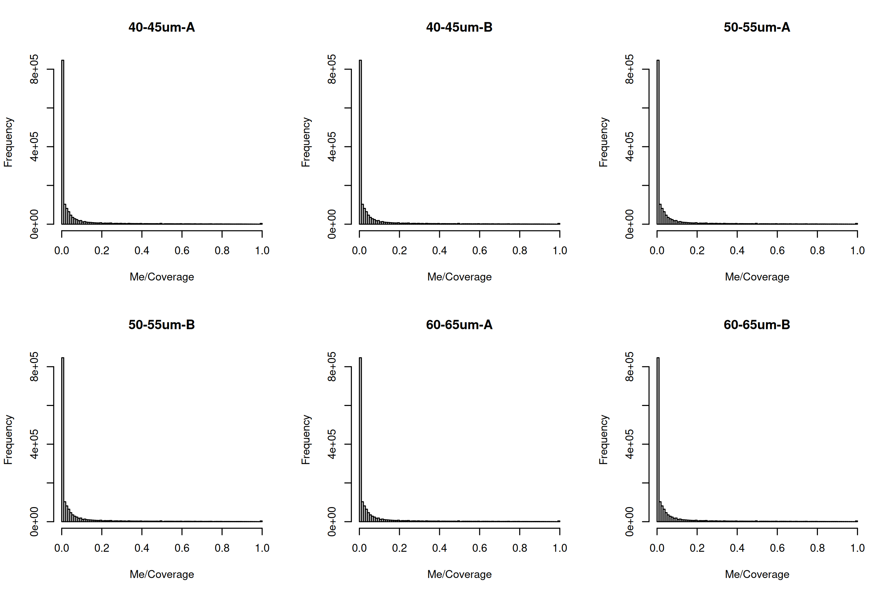
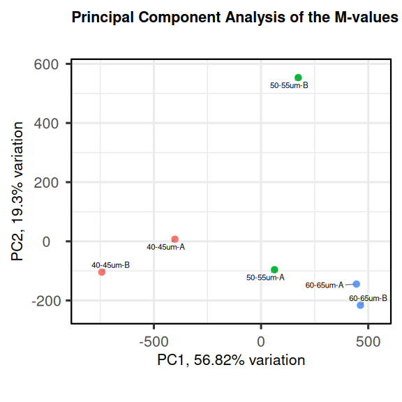
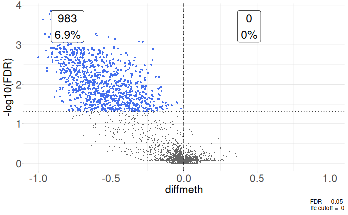

s1 <- read.delim(
file="GSM2299710_RRBS_40-45oocyte_LibA.cov.txt.gz",
header=FALSE,
nrows=6
)
s1Differential Methylation Analysis
Welcome! In this tutorial, we’ll walk through the common steps of differential methylation analysis.
Download the data
First we will download the data from “GSE86297”.
This study investigates the onset and progression of de novo methylation. Growing oocytes from pre-pubertal mouse ovaries (post-natal days 7-18) isolated and sorted into the following, non-overlapping size categories: 40-45, 50-55 and 60-65μm with two biological replicates in each.
#!/usr/bin/env bash
#
# Download the data from GEO
#
# ----------------------------------------------------------------------------
wget https://ftp.ncbi.nlm.nih.gov/geo/series/GSE86nnn/GSE86297/suppl/GSE86297_RAW.tar
tar -xvf GSE86297_RAW.tarThe metadata of the samples is described as:
GEO Source Group File
GSM2299710 40-45um-A 40um GSM2299710_RRBS_40-45oocyte_LibA.cov.txt.gz
GSM2299711 40-45um-B 40um GSM2299711_RRBS_40-45oocyte_LibB.cov.txt.gz
GSM2299712 50-55um-A 50um GSM2299712_RRBS_50-55oocyte_LibA.cov.txt.gz
GSM2299713 50-55um-B 50um GSM2299713_RRBS_50-55oocyte_LibB.cov.txt.gz
GSM2299714 60-65um-A 60um GSM2299714_RRBS_60-65oocyte_LibA.cov.txt.gz
GSM2299715 60-65um-B 60um GSM2299715_RRBS_60-65oocyte_LibB.cov.txt.gzDownload the metadata from github
#!/usr/bin/env bash
#
# Download the metadata from github
#
# ----------------------------------------------------------------------------
wget https://github.com/coriell-research/2025-coriell-summer-internship/raw/refs/heads/main/MethylationMetadata.csvThe Bismark cov.txt.gz output format
The Bismark coverage files include the data for each sample representing methylation in the CpG context. These files will contain 6 columns describing the: chromosome, start position, end position, methylation proportion in percentage, number of methylated C’s, and the number of unmethylated C’s.
> s1
V1 V2 V3 V4 V5 V6
1 6 3121266 3121266 0.00 0 17
2 6 3121296 3121296 0.00 0 17
3 6 3179319 3179319 1.28 1 77
4 6 3180316 3180316 4.55 1 21
5 6 3182928 3182928 4.33 22 486
6 6 3182937 3182937 5.37 61 1074Reading in the data
To read in the data, we can use edgeR’s helper function readBismark2DGE
md <- read.table("/path/to/metadata/MethylationMetadata.csv", sep = ",", header = TRUE)
rownames(md) <- md$Source
md$Filepath <- vapply(
md$File,
function(x) list.files(
path = "/path/to/geo/data",
pattern = x,
recursive = TRUE,
full.names = TRUE
),
character(1)
)
yall <- edgeR::readBismark2DGE(md$Filepath, sample.names = md$Source)The edgeR package will format this data such that in yall$counts for each sample you will have two columns called “Me” which corresponds to the methylated reads and “Un” which corresponds to the unmethylated reads. Each row correpsonds to a CpG locus found in the files. The genomic coordinates of the CpGs are stored in yall$genes. yall$samples corresponds to the metadata of the samples. It might be helpful to add the metadata you download to the samples component.
yall$samples <- cbind(yall$samples, md[md[rep(seq_len(nrow(md)), each = 2),],])
yall$samples$methylation <- rep(c("Me", "Un"), length(unique(yall$samples$Source)))Filtering and Normalization
For this example we will remove the mitochondrial (MT) CpGs since they are typically not of interest.
table(yall$genes$Chr)
yall <- yall[yall$genes$Chr!="MT", ]It might be useful to order your chromosomes in genomic order.
ChrNames <- c(1:19,"X","Y")
yall$genes$Chr <- factor(yall$genes$Chr, levels=ChrNames)
o <- order(yall$genes$Chr, yall$genes$Locus)
yall <- yall[o,]You should also annotate your CpGs with the nearest gene transcription start site.
TSS <- nearestTSS(yall$genes$Chr, yall$genes$Locus, species="Mm")
yall$genes$EntrezID <- TSS$gene_id
yall$genes$Symbol <- TSS$symbol
yall$genes$Strand <- TSS$strand
yall$genes$Distance <- TSS$distance
yall$genes$Width <- TSS$widthThe Distance column will describe the genomic distance in base pairs of the nearest gene to the CpG. If the distance is negative the TSS is upstream of the CpG and positive distances are downstream.
Before we can examine the methylation of the samples, we should remove any CpGs that have low coverage. In order to do this we should sum the Me and Un columns for each sample to obtain the total coverage for the loci.
Me <- yall$counts[,yall$samples$methylation == "Me"]
Un <- yall$counts[,yall$samples$methylation == "Un"]
Coverage <- Me + UnTo be conservative in our filtering we can make sure every sample has sufficient coverage for it to be included.
hasCoverage <- rowSums(Coverage >= 8) == 6If you have an adequate number of CpGs to test, you may proceed. If the number of CpGs seems to low, maybe consider other filtering strategies.
We will also filer out CpGs that are never methylated or are always methylated because they will provide little information in the differential methylation and will dilute our testing.
hasBoth <- rowSums(Me) > 0 & rowSums(Un) > 0You should check the table to get an understanding of how many CpGs fell into each category.
table(hasCoverage, hasBoth)Now you can filter your DGEList for the desired CpGs to test in downstream analysis.
y <- yall[hasCoverage & hasBoth,,keep.lib.sizes=FALSE]We need to calculate the actual library sizes since the reads are divides into the Un and Me categories.
TotalLibSize <- 0.5 * y$samples$lib.size[y$samples$methylation == "Me"] +
0.5 * y$samples$lib.size[y$samples$methylation == "Un"]
y$samples$lib.size <- rep(TotalLibSize, each = 2)Quality Control
To observe the methylation/coverage distributions for a given sample we can plot histograms of each sample.
You can look at the sample distribution for coverage to see if there might be any max coverage you wish to filter for. This might be indicated by a secondary peak at the high coverage ranges.
Me <- y$counts[, y$samples$methylation == "Me"]
Un <- y$counts[, y$samples$methylation == "Un"]
Coverage <- Me + Un
par(mfrow = c(2, 3))
for (i in md$Source) {
hist(Me/Coverage, breaks = 100, main = i)
}
par(mfrow = c(2, 3))
for (i in md$Source) {
hist(log10(Coverage), breaks = 100, main = i)
}

To observe sample concordance you can use the plot_cor_pairs function in the coriell package.
coriell::plot_cor_pairs(Me/Coverage, cex_labels = 1)
Data Exploration
The data can be explored by generating PCA plots of the methylation level in the M-value format. More information of the M-value can be found “here”. An M-value is calculated by taking the log of the ratio of methylated and unmethylated C’s. This is equivalent to the difference between methylated to the difference between methylated and unmethylated C’s on the log-scale. A prior count of 2 is added to avoid taking the log of zero.
Me <- y$counts[, y$samples$methylation == "Me"]
Un <- y$counts[, y$samples$methylation == "Un"]
M <- log2(Me + 2) - log2(Un + 2)
colnames(M) <- md$SourceWe can now use these M-values to generate a PCA biplot using the PCAtools package.
pca <- PCAtools::pca(
M,
metadata = md
)
PCAtools::biplot(
pca,
colby = "Group",
title = "Principal Component Analysis of the M-values"
)
It might be of interest to observe the sample to sample distances as well.
coriell::plot_dist(M, metadata = md[, "Group", drop = FALSE])
Design Matrix
One aim of this study is to identify differentially methylated (DM) loci between the different cell populations. In edgeR, this can be done by fitting linear models under a specified design matrix and testing for corresponding coefficients or contrasts. A basic sample-level design matrix can be made as follows.
We then expand this to the full design which models sample and methylation effects.
The first six columns represent the sample coverage effects. The last three columns represent the methylation levels (in logit units) in the three groups.
designSL <- model.matrix(~0+Group, data=md)
design <- edgeR::modelMatrixMeth(designSL)Differential methylation analysis at CpG loci
For simplicity, we only consider the CpG methylation in chromosome 1. We subset the coverage files so that they only contain methylation information of the first chromosome.
y1 <- y[y$genes$Chr==1,]Then we proceed to testing for differentially methylated CpG sites between different groups. We fit quasi NB GLM for all the CpG loci using the glmQLFit function.
fit <- glmQLFit(y1, design)We identify differentially methylated CpG loci between the 40-45 and 60-65μm group using the likelihood-ratio test. The contrast corresponding to this comparison is constructed using the makeContrasts function.
contr <- makeContrasts(Group60vs40 = Group60um - Group40um, levels=design)
qlf <- glmQLFTest(fit, contrast=contr)The contrast object is a matrix showing the contrast desired
> contr
Contrasts
Levels Group60vs40
Sample1 0
Sample2 0
Sample3 0
Sample4 0
Sample5 0
Sample6 0
Group40um -1
Group50um 0
Group60um 1We could also make multiple contrasts in one go and then select the contrast we wish to use like this.
contr <- makeContrasts(
Group60vs40 = Group60um - Group40um,
Group50vs40 = Group50um - Group40um,
levels=design
)
qlf <- glmQLFTest(fit, contrast=contr[,"Group60vs40"])> contr
Contrasts
Levels Group60vs40 Group50vs40
Sample1 0 0
Sample2 0 0
Sample3 0 0
Sample4 0 0
Sample5 0 0
Sample6 0 0
Group40um -1 -1
Group50um 0 1
Group60um 1 0The top set of most significant DMRs can be examined with topTags. Here, positive log-fold changes represent CpG sites that have higher methylation level in the 60-65μm group com- pared to the 40-45μm group. Multiplicity correction is performed by applying the Benjamini- Hochberg method on the p-values, to control the false discovery rate (FDR).
topTags(qlf)> topTags(qlf)
Coefficient: -1*Group40um 1*Group60um
Chr Locus logFC logCPM F PValue FDR
1-131987595 1 131987595 10.741404 2.698587 31.70873 1.850730e-08 0.0001409481
1-120170060 1 120170060 7.855076 4.531948 31.23248 2.362954e-08 0.0001409481
1-183357406 1 183357406 8.399456 4.272956 30.78670 2.970455e-08 0.0001409481
1-172206570 1 172206570 10.110386 2.706416 29.93463 4.601316e-08 0.0001637493
1-172206751 1 172206751 13.918907 1.294445 28.71671 8.607148e-08 0.0002302044
1-120169950 1 120169950 9.231213 3.469975 28.21772 1.112752e-07 0.0002302044
1-169954561 1 169954561 12.217222 2.352360 28.08869 1.189199e-07 0.0002302044
1-141992739 1 141992739 11.276043 1.335515 27.73221 1.428846e-07 0.0002302044
1-92943747 1 92943747 9.580566 2.358125 27.58701 1.539852e-07 0.0002302044
1-36500213 1 36500213 9.957566 2.195456 27.49192 1.617172e-07 0.0002302044The total number of DMRs in each direction at a FDR of 5% can be examined with decideTests.
summary(decideTests(qlf))> summary(decideTests(qlf))
-1*Group40um 1*Group60um
Down 0
NotSig 13252
Up 983The differential methylation results can be visualized using an MD plot. The difference of the M-value for each CpG site is plotted against the average abundance of that CpG site. Significantly DMRs at a FDR of 5% are highlighted.
plotMD(qlf)
We can also plot volcanoes by calculating the difference in methylation of each group since log fold changes of these test might be hard to interpret as far as methylation levels go.
Me <- y1$counts[,y1$samples$methylation == "Me"]
Un <- y1$counts[,y1$samples$methylation == "Un"]
Coverage <- Me + Un
Beta <- Me/Coverage
colnames(Beta) <- rownames(md)
contr <- makeContrasts(
Group60vs40 = Group60um - Group40um,
levels=designSL
)
contr <- limma::contrastAsCoef(designSL, contr)
group1Methylation <- rowMeans(Beta[,which(contr$design[,"Group60vs40"] < 0)])
group2Methylation <- rowMeans(Beta[,which(contr$design[,"Group60vs40"] > 0)])
diffMethylation <- group1Methylation - group2Methylation
dataframe <- coriell::edger_to_df(qlf)
dataframe$group1 <- group1Methylation
dataframe$group2 <- group2Methylation
dataframe$diffmeth <- diffMethylationUsing these values we can plot a volcano plot using the coriell package.
coriell::plot_volcano(dataframe, x = "diffmeth", y = "FDR", lfc = 0, fdr = 0.05) +
coord_cartesian(xlim = c(-1,1))